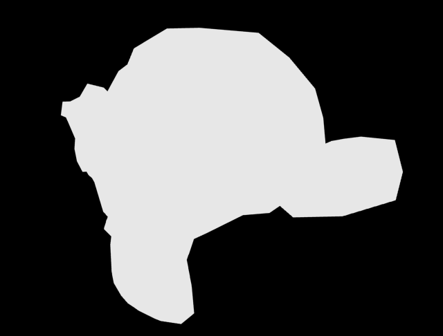
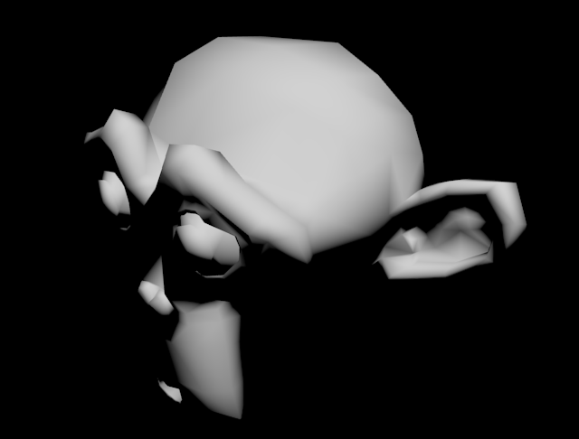
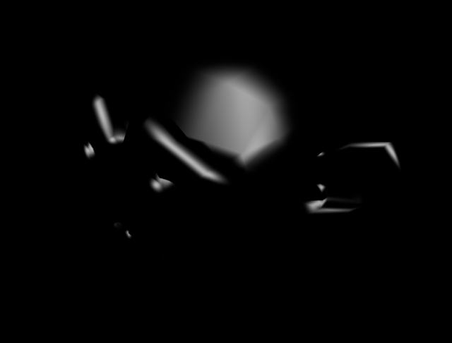
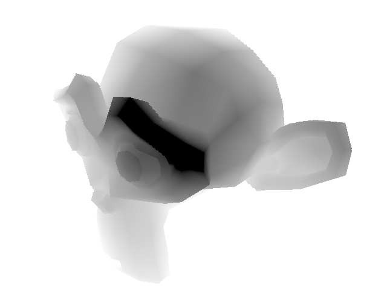
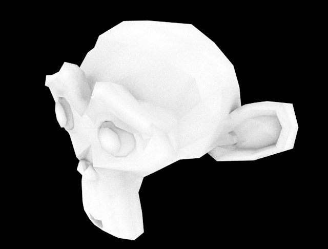
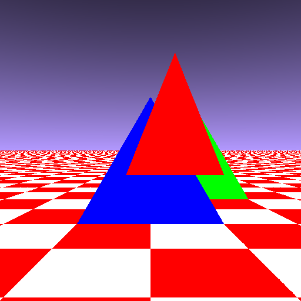
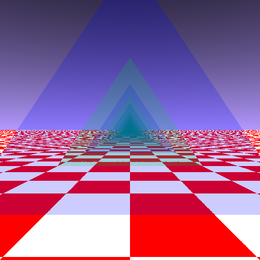

Nikolaus Mayer
Let’s build a Raytracer
Sommercampus 2019
Technische Fakultät
Universität Freiburg
Why this course?
- Fact: Computer graphics are awesome
- Fact: OpenGL is a mess (of user friendliness)
- Fact: Blender is mostly a black box
- my own opinion: you can never fully understand something which you have never made yourself
- consequence: one should develop one's own renderer
- this course wants to be the next best thing
Overview
- Introduction
- 0. An empty image
- 1. Heaven and earth
- 2. Triangles
- 3. Raytracing
- 4. Ray energy
- 5. Spheres
- 6. Light
- 7. Shadows
- 8. Random stuff
- 9. Textures
- █. Bonus: ████████
Introduction
Raytracing vs Rasterization
- Rasterization: step-by-step pipeline, whole image is processed in each step
|  |  |  |
|  |  |

|
Level 0 — An empty image
Level 1 — Heaven and earth
#1 Heaven and earth
Result

Level 2 — Triangles
#2 Triangles
Intersection ray/triangle
- camera center $\mathbf{O}$, ray direction $\mathbf{R}$, distance $d$
- $P_{0} + u\cdot\mathbf{u} + v\cdot\mathbf{v} = \mathbf{O} + d\cdot\mathbf{R}$
- → linear equation system $$P_{0,x} + u\cdot\mathbf{u}_x + v\cdot\mathbf{v}_x = \mathbf{O}_x + d\cdot\mathbf{R}_x$$ $$P_{0,y} + u\cdot\mathbf{u}_y + v\cdot\mathbf{v}_y = \mathbf{O}_y + d\cdot\mathbf{R}_y$$ $$P_{0,z} + u\cdot\mathbf{u}_z + v\cdot\mathbf{v}_z = \mathbf{O}_z + d\cdot\mathbf{R}_z$$
- rearranged: $$0 = P_{0,x} + u\cdot\mathbf{u}_x + v\cdot\mathbf{v}_x - \mathbf{O}_x - d\cdot\mathbf{R}_x$$ $$0 = P_{0,y} + u\cdot\mathbf{u}_y + v\cdot\mathbf{v}_y - \mathbf{O}_y - d\cdot\mathbf{R}_y$$ $$0 = P_{0,z} + u\cdot\mathbf{u}_z + v\cdot\mathbf{v}_z - \mathbf{O}_z - d\cdot\mathbf{R}_z$$
- 3 equations, 3 unknowns → \Ü/
- but so much work... ಥ_ಥ
#2 Triangles
Lazy solving
SymPy can do symbolic math
from sympy import var, solve
pox,poy,poz,ux,uy,uz,vx,vy,vz,ox,oy,oz,rx,ry,rz,u,v,d =
var('pox poy poz ux uy uz vx vy vz ox oy oz rx ry rz u v d')
E1 = pox + u*ux + v*vx - ox - d*rx
E2 = poy + u*uy + v*vy - oy - d*ry
E3 = poz + u*uz + v*vz - oz - d*rz
solutions = solve([E1,E2,E3],[u,v,d])
print(solutions)
{u: [...], v: [...], d: [...]}#2 Triangles
Result

Level 3 — Raytracing
#3 Raytracing
Result

Level 4 — Light transport
#4 Light transport
Result

Level 5 — Spheres
#5 Spheres
Intersection test
- edge case: ray "grazes" sphere
- $\mathbf{p} = $ sphere center $-$ camera center; $r = $ radius
- distance to hit point $ = \sqrt{\left(\mathbf{p}\cdot\mathbf{p}\right) + r^2} = \sqrt{||\mathbf{p}||^2 + r^2}$
- $ = \mathbf{p} $ $ \cdot$ ray direction
- (ray has length 1)
- hit → longer
- no hit → shorter
- → intersection test → \Ü/


#5 Spheres
Distance computation


- $\mathbf{p} = $ sphere center $-$ camera center; $r = $ radius
- $b = \mathbf{p}$ $\cdot$ ray direction
- $s = \sqrt{\left(\mathbf{p}\cdot\mathbf{p}\right) - b^2}$
- $t = \sqrt{r^2 - s^2}$
- $d = b - t$
- → distance → \Ü/
#5 Spheres
Normal vectors


- $\mathbf{p} = $ sphere center $-$ camera center; $r = $ radius
- normal vector $= -\mathbf{p} + d$ $\cdot$ ray direction
- (scale normal vector to length 1!)
Level 6 — Light
Level 7 — Shadows
#7 Shadows
Result

Level 8 — Random stuff
#8 Random stuff
Result

#8 Random stuff
matte surfaces
- matte objects are like "bad mirrors"
- (example: polished vs. sandblasted metal)
- matte surfaces are rough surfaces
- rough surfaces' normals are random
- grade of randomness = roughness
- simulation: take perfect reflection and add random offset vector

#8 Random stuff
Result
#8 Random stuff
Depth-of-field
- we have neither a lens nor a diaphragm
- → simulation by "sensor shift"
- geometric construction
- focal distance $f$, camera shift vector $\mathbf{s}$
$\Rightarrow$ ray shift vector $= \frac{1}{d}\cdot \left(-\mathbf{s}\right)$

Level 9 — Textures
BONUS LEVEL UNLOCKED
Level Ω — Rotation matrices
|
|
|
||
|
|
|
That's it!
More ideas
- chromatic aberration
- non-pinhole cameras (z.B. fisheye)
- recursive raytracing
- Fresnel effect
- glass material (refraction)
- wireframe material
- multiple light sources
- other illumination models (Blinn-Phong, Cook-Torrance)
- HDRI illumination
- more implicit forms (torus (="donut"))
Image sources
- RGB cube: SharkD (Wikimedia)
- metal texture: Texture Haven
- wood texture: Maarten Deckers (Unsplash)